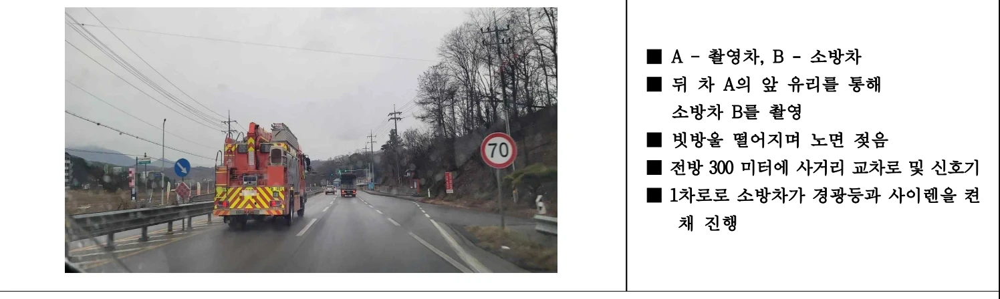

768. Дараах нөхцөлд хууль тогтоомжийг зөрчсөн жолоодох арга 2-ыг сонгоно уу.

- ①B жолооч – Цагт 100 километрийн хурдтай явна.
- ②A жолооч – Цагт 70 километрийн хурдтай явна.
- ③B жолооч – Уулзвар дээр гүйцэж түрүүлнэ.
- ④A жолооч – Уулзвар дээр гүйцэж түрүүлнэ.
- ⑤B жолооч – Урд явж буй тээврийн хэрэгсэлтэй аюулгүйн зай барихгүй.
Хариулт харах
Зөв хариулт
② A жолооч – Цагт 70 километрийн хурдтай явна.
④ A жолооч – Уулзвар дээр гүйцэж түрүүлнэ.
Үндэслэл
Хуулийн 30 дугаар зүйл: шуурхай албаны машинд дараах шаардлагыг хэрэглэхгүй. Гэхдээ 4–12 дахь чөлөөлөлт нь зөвхөн 2 дугаар зүйлийн 22-а-аас в-д заасан машин, мөн Ерөнхийлөгчийн тогтоолд заасан цагдаагийн машинд хамаарна. 1. Хурдны хязгаар (шуурхай машинд тусгайлан хязгаар тогтоосон бол мөрдөнө). 2. Гүйцэж түрүүлэхийг хориглох. 3. Урд шахаж орохыг хориглох. 4. Дохио мөрдөх. 5. Явган хүний замд орохыг хориглох. 6. Голын шугам давахыг хориглох. 7. Хөндлөн гарах зэргийг хориглох. 8. Аюулгүй зай барих. 9. Гүйцэж түрүүлэх арга. 10. Түр болон удаан зогсохыг хориглох. 11. Удаан зогсохыг хориглох. 12. Эвдрэл зэрэгт авах арга хэмжээ. Бороонд зам норсон бол дээд хурднаас 20%-иар бууруулж явна (журмын 19 дүгээр зүйлийн 2 дахь хэсгийн 1).
Үндэслэлийн текст нь машин орчуулга.